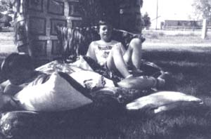
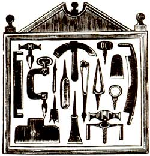

Helpful hints from friends, family, and neighbors
Pillow Talk
How DO OLD SHEETS AND "PUFFY" STYROFOAM packing pieces go together? At our house, the two materials have been combined with some inexpensive new cover material to create giant, futon-like pillows. Our four young sons use the lightweight but comfortable private islands for reading, watching television, or just late-night summer stargazing.
The puffy pillows were a project for the whole family, mother and child alike. The boys called a friend with an office machine store who was willing to save us large amounts of the Styrofoam packing pieces. Because each of the finished pillows is about 48" long by 44" wide and 5" thick, we needed a full box of the pieces-about 24" square-to fill each one.
Each of the children helped sew a large pillowcase from old sheets for the inside cover. The long side of the case was left open. Because the inside pillowcase must keep the packing material from escaping, we double-stitched all the seams. The inside pillowcases were then turned to put rough edges inside.
To keep the puffy pieces front sliding to one end of the pillow, we next sewed four "baffles," or compartments, about 12" apart across the width of the pillow, still leaving the long side open for stuffing. (Our nine and 10-year-olds were able to do most of the machine sewing of their pillowcases with minimal help; the six- and eight-year-olds needed a little more.)
Next, we made an outside-cover pillowcase that was about 4" wider and longer than the one in the interior. The bottom side of each cover is recycled sheet material. To finish the top piece of each outside cover and make a matching bolster pillow for each puffy pillow, the children each chose two yards of 45"-wide new material that we found for a dollar per yard. The new and old materials were all washed to prevent future shrinkage.
Next, the boys stuffed the baffles of the inside pillowcase. The older boys stood the partially filled cases up in a large box as they worked. The younger children found it easier to stuff when their bags were clothespinned to a low line, which left both hands free to pour the puffies into the pillowcases. All of them used a gallon plastic milk jug with its lid on and its bottom cut off to make a scoop to grab the packing material and shoot it into the baffles. The puffies in the baffles were packed in fairly tightly to prevent them from sliding around and congregating in one end of the baffle later.
Once filled with puffies, safety pins or clothespins were used to temporarily close up the baffle openings.
Sewing the baffles shut was the trickiest job. One baffle at a time was hemmed by hand or straight pinned (we're not seamstresses). Rough edges were turned inside to make the seam. Each baffle was double seamed. With the sewing machine moved away from the wall and a boy helping to hold the pillow as mom sewed, it was awkward but quick work.
Finally, the outside cover, with its rough edges turned inside, was pulled over the pillow. The case was sewed together on the sewing machine, creating a loose-fitting outside cover. When the covers get dirty we'll rip out a side seam and restitch.
When bent in the middle and leaned against a wall, one pillow seats two-children or an adult and a child-comfortably. Two pillows stacked together, folded in the middle and leaned against a wall, are tall enough for a comfortable, adult-size futon chair. These multi-use pillows are so lightweight they can be easily moved anywhere by anyone for practically any lounging need.
-Nicki Klein Parsons
Montrose, Colorado
Once the water has drained away, you have prime potting soil or garden additive-with no weeds!
Don't let spare garden produce go to waste! Take it to a senior citizens' apartment complex. You'll find plenty of eager recipients. Margaret Shauers Great Bend, Kansas
-Margaret Shauers
Great Bend, Kansas
Whenever I go fishing or find myself around swamp or bog, I take along a five-gallon spackling pail-the kind with a tight-fitting lid. I look for black, watery muck with lots of decomposing vegetation, such as sphagnum moss. Using my hands, I scoop the stuff into my pail, take it home, and pour it into a container prepared with drain holes. Once the water has drained away, you have prime potting soil or garden additive-with no weed seeds! Developers may be filling in America's wetlands, but I'm doing my very best to dig them back out.
-Frederic Otten
Surf City, New Jersey
Don't freeze your fingers handling cold steel tools when you work out in the cold this winter. Allow the tools to warm up indoors before beginning. Then keep an old towel or a piece of rug handy to set them down on while you work. This allows them to retain their warmth a bit longer.
-Joseph A. Morrison
Candor New York
How many times have you walked the distance to your garden only to find that you have forgotten this tool or that tool, the plant food or ... ? As a frequent victim of that brand of forgetfulness, I decided to lend myself a hand.
I fixed an old mailbox to a plank near the garden and placed all the tools that would fit inside. I painted some bright designs on the sides, and it soon became a pleasing addition to the whole area.
So don't throw those old things away; you love Mother Earth too much.
-Dr. R. Rimmer
Lynn, North Carolina
SIX GALLOS OF MILK PER DAY IS FAR MORE THAN A SMALL FAMILY CAN HANDLE
When painting, I find that resting a brush on the edge of a bucket is a constant cause for worry. It always slows me down because I have to carefully maneuver around the brush as I work. And regardless of my efforts to avoid it, the brush always falls into the paint or worse, onto the floor or ground. It's especially irksome when I'm high up on a ladder.
To take care of this nuisance, I simply screwed a 1/2" hook into the wooden handle, just above the metal shank. This allows me to hang the brush on the bucket with no worries. It allows me to move about quickly when moving ladders and dropcloths; the dog won't knock it off-, and it also frees up a hand to carry other things. (To keep it neat, I always wipe the brush on only one spot in the bucket before painting.) At the end of the day, you can wrap the bristles in newspaper and hang the wrapped brush in a one-gallon bucket of the appropriate solvent. The brush can safely hang like this overnight, or even for a few days, until you get around to cleaning it. The newspaper keeps the bristles straight and unsplayed, and a wire brush will remove any dried paint near the shank. Spinning the brush or hitting it repeatedly on your toe will remove the excess solvent before reuse.
-Byron Timberman
Occidental, California
Rosie, our Milking Shorthorn/Holstein/Jersey-cross dairy cow, has literally overwhelmed us with her milk production each spring at calving time. Six gallons per day is far more than a small family can handle, regardless of our frantic efforts at cheese-and butter-making and my pleadings for everyone to eat more cereal.
The possibility of canning the excess was in the back of my mind, yet I couldn't find a formula for the process in any of my cookbooks. It took a visiting old-timer to our ranch-a lady of 75 who went by the name of "Aunt Lil"-to get me started. After canning literally hundreds of quarts, I can honestly and safely say that I've never had a spoiled batch.
I do all my work on a woodstove, usually in the early morning before the cabin heats up. You'll find the process cooler and easier on a gas or electric unit. Just remember to start timing things after your canning water has started to boil around the jars.
Method # 1: Strain fresh milk through sterilized cheesecloth into sterilized, warm quart jars, leaving an inch of space at the top. Let sit for 1 hour, then add sterilized lids and rings. Boil for 2 1/2 hours.
Depending on the fat content of your milk, you should end up with an inch or two of thick cream around the neck of each jar. I spoon this off and use it in cooking.
Method # 2: Strain fresh milk through sterilized cheesecloth into sterilized gallon jars. Leave overnight in the refrigerator.
The next day, skim off any cream that has risen to the top; save for other use. Pour cold milk into sterilized, cooled-down jars (cold milk will crack hot glass), leaving an inch of space at the top. Add the sterilized lids and rings and boil for 2 1/2 hours.
I like this method best because I can more easily skim off the cream for butter or ice cream!
-C.A. Coleman
Cascade,Idaho
If your hands are like mine you're engage in a constant battle to keep them clean.
Deerfly bites are not only painful, they can also cause severe itching for days. I find that deerflies always land on the highest available spot. So, when I hear them
buzzing around my head, I lift both hands into the air. They soon land near my fingers where it is easy to slap them. This technique has saved me a lot of agony on long summer walks.
-Nancy L Peckham
Horseheads, New York
To stop that musty, yucky smell from accumulating in seasonal coolers, ice chests, and thermos bottles: Put an herbal tea bag (any variety) in after each use, or just before storage. Coffee tastes and smells can be removed from a thermos by placing a tea bag in it with some hot water. If you allow it to sit overnight, the taste will be gone when you pour the water out next morning.
And, to keep the birds off your strawberries and berry bushes, here's a hasn't-failed-yet trick: Drape your berry bushes with Christmas tinsel. It's weatherproof, easy to obtain, recycles the Christmas stuff, and adds a nice sparkle to your garden. It's a safe, nontoxic way to protect your fruit, but it scares away everything, so be sure not to use it near nesting sites or feeders.
-Mikki Smith
Lexington, Michigan
I have some great uses for vinegar.
Vinegar takes the sting out of sunburn. Rinse your hair in vinegar and it will shine. Use a tablespoon of vinegar in 4 ounces of water. Gargle and swallow a mouthful every hour to get rid of a sore throat. Mix 2 parts vinegar and 1 part honey and drink it for a good hay-fever medicine.
-Verna Bowes
Crawley, WV
I finally found a way to dispose of those plastic pull rings that six-packs of beer and soft drinks are held together by. We live in the country and do much of the necessary construction work ourselves. When making cement, we simply pour all of those rings into the mixture. They add strength to the cement, are all but invisible once in the mixture, and are not contribut ing to an already serious garbage-disposal problem.
-R. Dresser
Duncan, Oklahoma
I'm forever getting oil, grease, and paint on my hands. To keep them clean, I fill an empty spray container with turpentine and use it when I finish a job. It's also great for cleaning oil and grease off the handles of any tools I have to keep a good grip on. It's much cleaner and less wasteful to spray on the stuff than pour it from a bottle.
Certain makes of a popular power mower that uses a gas-oil mixture and runs at constant speeds can be difficult to start, even after using an air pump four or five times. The next time you find yourself pulling or tugging without results, don't give up! Try this first.
Look on the side of the motor. Almost all makes of this type have a small, usually greenish plastic box that houses the foam air cleaner. The box lid is closed by a wire spring-clip latch. Open the latch, swing the side-hinged lid back, and you should see the foam pad. Give it a few squirts of car starter fluid, close the little box, and snap the spring clip back into place. Starting the mower should be a snap after this.
-George Lynch
Asheville, North Carolina
Through the years we've all discovered a few practical, time-tested solutions to the frustrating little problems of everyday life. Send your tips to: "Country Lore, " M OTHER E ARTH N EWS , P.O. Box 129, Arden, NC 28704. Please tell us something about yourself and send along a snapshot We'll try to make you famous!
|
 |
|
|
|
 |
|
|
|
|
|
|